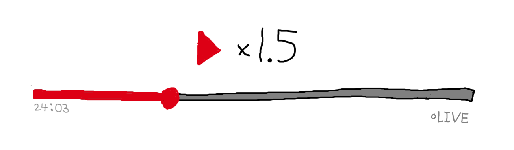

Timeline conundrum
I had the idea for this problem while watching a YouTube livestream about the coronavirus pandemic. I challenge you to try this problem without looking at the solution. This is easily solved with some basic algebra. Even if you haven’t learned that, you can probably figure it out after some thought. If you'd like, send me an email and tell me how you fared!
The problem 
Josh is watching a live broadcast on YouTube. He notices that he joined late, so he rewinds to the beginning of the livestream, 25 minutes and 18 seconds ago. After 45 seconds, he starts watching the livestream at 1.5 times speed to save time. (Previously, he was watching at normal speed). The stream is set to end 51 minutes from when Josh switches the playback speed. Will Josh be able to catch up and watch the stream live? If so, how long would the stream have been running for when he starts watching live?
Solution
When Josh jumps to the beginning of the livestream, the live stream has already been running for 1518 seconds (25 minutes and 8 seconds). Forty-five seconds later, he is 45 seconds from the beginning of the livestream (no way!), and the livestream has been running for 1518 + 45 = 1563 seconds.
At that point he watches the livestream at 1.5 times speed while the broadcaster continues to stream one second of video every second. If t seconds elapse since Josh switches to 1.5x playback speed, then dj = 45 + 1.5t, where dj is the number of seconds into the stream that Josh is at. Similarly, the number of seconds dl that the livestream has been running for is dl = 1563 + t.
When Josh catches up and begins watching live, dj and dl is equal. Set dj = dl, and solve for t.
dj = dl
1.5t + 45 = t + 1563
t = 3036
So when Josh catches up, it will be 3036 seconds after he had changed the playback speed. Using the equation dl = 1563 + t, we see that the livestream has been running for dl = 1563 + 3036 = 4599 seconds. The stream is set to end 51 minutes after Josh switches playback speed, Josh switches the playback speed 45 seconds after playing the broadcast from the beginning, and the stream has been running for 1518 seconds when Josh starts playing the stream from the beginning. So the scheduled running time of the stream is 1518 seconds + 45 seconds + 51 minutes = 1518 s + 45 s + 3060 s = 4623 seconds. Therefore Josh will be able to watch the stream live with 4623 - 4599 = 24 seconds to spare! He can say goodbye in the chat as the presenter signs off!
Extension challenge
What is the shortest time that Josh could have switched the playback speed so that he watches the last three seconds of the stream live? Assume that the stream ends on time and lasts exactly 4623 seconds.
Answer: 66 seconds.